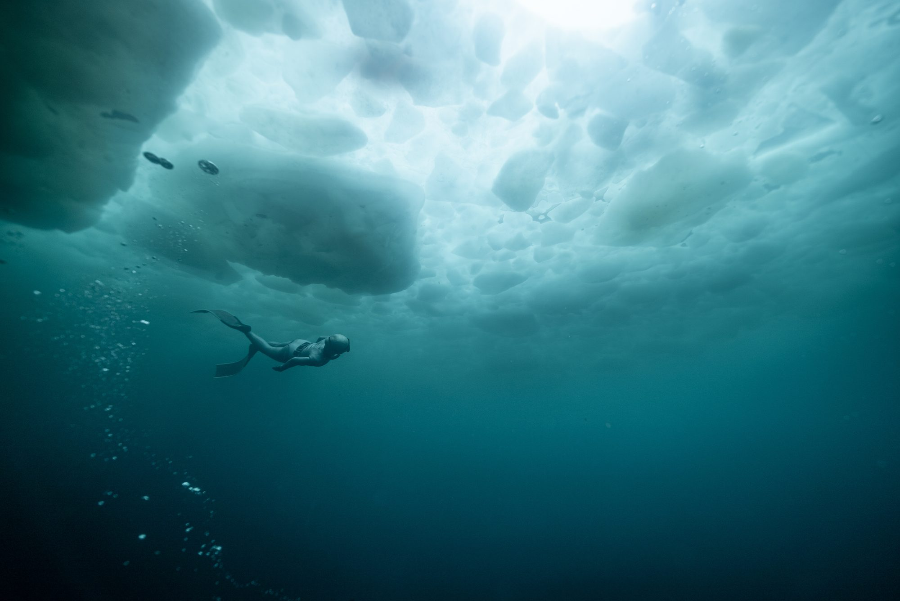
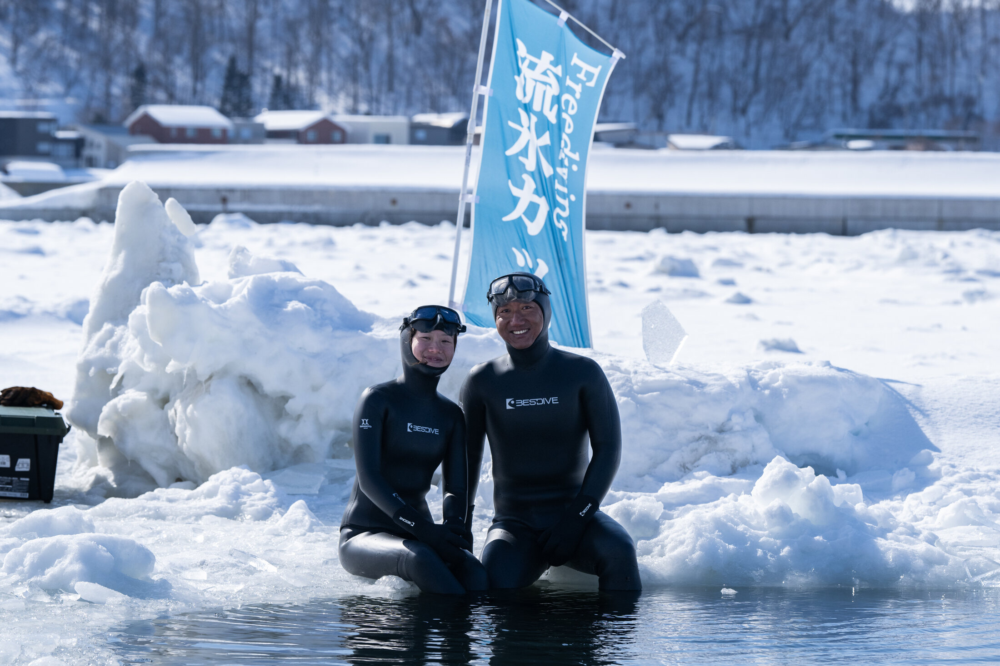

オホーツク海の流氷が接岸する知床ウトロ。氷の下に広がる静寂の海へ、息だけを頼りに潜る——日本で唯一、この場所だけの体験です。
私たちは2013年から、北海道・知床ウトロで「流氷フリーダイビングカップ」を開催してきました。分厚い流氷に穴を開け、氷点下の海へ素潜りで挑む——ヨーロッパの凍った湖で行われるアイスダイビングとは異なり、知床では塩分を含む海水と、ゴツゴツと起伏に富んだ流氷の下という、世界でも類を見ない環境で潜ることができます。地元の特別な許可と11年以上の運営実績のもと、国内外のフリーダイバーが集うイベントへと育ってきました。
シベリアのアムール川から流れ出た海水が凍り、南下して知床沿岸に接岸する流氷。北半球で流氷が接岸する最も南の海域のひとつであり、湖の平らな氷とは異なる、起伏に富んだダイナミックな氷の造形の下を潜ります。
通常、流氷上での活動には地元の特別な許可とガイドの同行が必要です。私たちは11年かけて地元漁業関係者・消防・医療機関との信頼関係を築き、セーフティダイバー、スキューバサポートという体制で安全に運営しています。
2024年2月、知床ウトロの流氷下でCMAS・ギネス世界記録公認のアイスフリーダイビング世界記録が樹立されました。台湾・韓国など海外からのファンダイブ参加者も増え、国際色豊かなコミュニティに育っています。
2024年2月22日、知床ウトロの流氷下にて、フリーダイバー尾関靖子選手がダイナミックウィズフィン種目で126mを泳ぎきり、CMAS公認・ギネス世界記録に認定されました。氷点下の海水、分厚く不揃いな流氷、限られた浮上ポイントという過酷な条件のもとで実現した記録です。
詳しく見る →知床半島は2005年に世界自然遺産に登録された、原生的な自然が残る北海道最東端の地。冬になるとオホーツク海を流氷が覆い、豊かな海の生態系と、流氷の下でしか出会えない生き物たちの世界が広がります。私たちの活動拠点は、その玄関口であるウトロです。
知床と流氷フリーダイビングについて →
2027年も知床ウトロにて開催します。フリーダイビング資格をお持ちの方を対象に、ファンダイブ形式でご参加いただけます。安全運営の都合上、受け入れ人数には限りがあります。
参加のご相談、資格・経験についてのご質問、取材・メディアのお問い合わせなど、お気軽にご連絡ください。